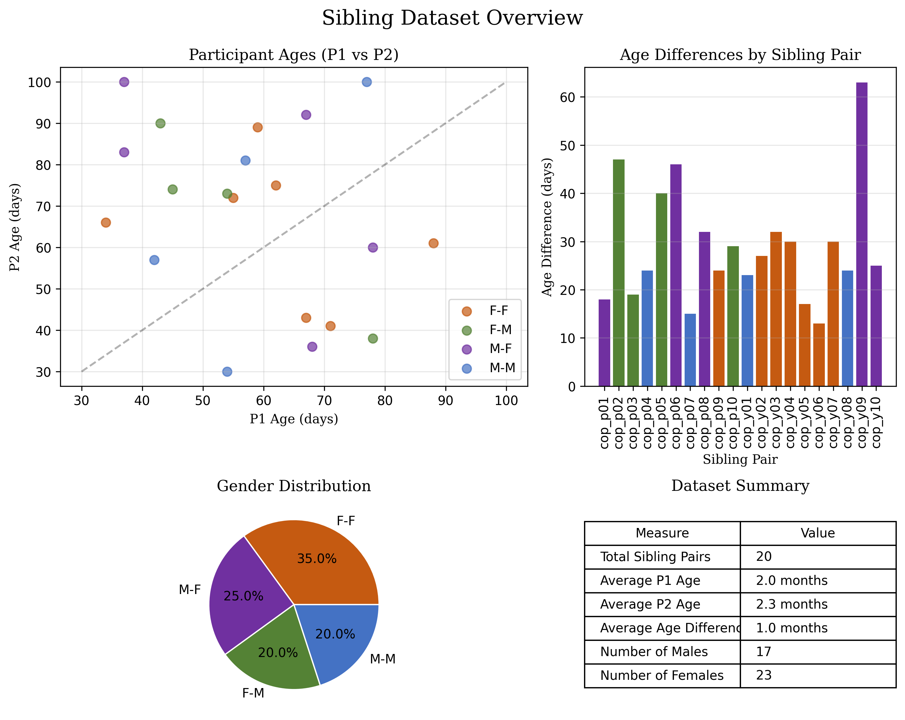

The following data has been made available in masked form.
Download Guide ⬇️
The masked data can be downloaded from the repository of Jagellonian University here. The unmasked data can be requested from the authors. The unmasked data is not available in this repository for privacy reasons.
Dataset Mother Infant
Dataset Siblings

Motion tracking and signal processing and wrangling
The motion tracking and signal processing pipeline is divided into two main steps: 1. Tracking: This step involves tracking the movements of individuals in the videos using a pose estimation model. The output is a video with annotated keypoints and a CSV file containing the coordinates of these keypoints. 2. Signal Processing: This step involves processing the keypoint data to extract relevant features for analysis. The output are processed timeseries files, and a flat dataset containing our smoothness measures that are directly ready for statistical analysis.
Step 1: Tracking two persons in videos for top-view (Python)
We have tried several pose tracking solutions. From this experience we concluded yolo worked best for top-view tracking.
Installation Guide 🛠️
The yolo model we used is the YOLOv8 pose model. This model is the heaviest and will run slowly on a CPU. We recommend using a GPU for this model.
Step 1: Install requirements
pip install requirements.txt
Code
from ultralytics import YOLOfrom pydantic import BaseModelimport cv2import csvimport numpy as npimport globimport osimport torch # for gpu supportfrom itertools import combinationsimport systorch.cuda.set_device(0)# Load the modelmodel = YOLO('yolov8x-pose-p6.pt') # heaviest model# main variablesvideo_folder ="../data_fulldata_raw/"# avi mp4 or other video formatsvideo_files = glob.glob(video_folder +"*.mp4") + glob.glob(video_folder +"*.avi")step1resultfolder ="../data_fulldatatracked_afterSTEP1/"# we can replace with full dataprint(video_files)def tensor_to_matrix(results_tensor):# this just takes the results output of YOLO and coverts it to a matrix,# making it easier to do quick calculations on the coordinates results_list = results_tensor.tolist() results_matrix = np.matrix(results_list) results_matrix[results_matrix==0] = np.nanreturn results_matrixdef check_for_duplication(results):# this threshold determines how close two skeletons must be in order to be# considered the same person. Arbitrarily chosen for now. close_threshold =150# missing data tolerance miss_tolerance =0.95# this means we can miss up to 75% of the keypoints drop_indices = []iflen(results[0].keypoints.xy) >1: conf_scores = []# get detection confidence for each skeletonfor person in tensor_to_matrix(results[0].keypoints.conf): conf_scores.append(np.mean(person))# this list will stores which comparisons need to be made combos =list(combinations(range(len(results[0].keypoints.xy)), 2))# now loop through these comparisonsfor combo in combos: closeness =abs(np.nanmean(tensor_to_matrix(results[0].keypoints.xy[combo[0]]) - tensor_to_matrix(results[0].keypoints.xy[combo[1]])))# if any of them indicate that two skeletons are very close together,# we keep the one with higher tracking confidence, and remove the otherif closeness < close_threshold: conf_list = [conf_scores[combo[0]], conf_scores[combo[1]]] idx_min = conf_list.index(min(conf_list)) drop_indices.append(combo[idx_min])# additional checks:for person inrange(len(results[0].keypoints.xy)): keypoints_missed = np.isnan(tensor_to_matrix(results[0].keypoints.xy[person])).sum()/2 perc_missed = keypoints_missed/len(tensor_to_matrix(results[0].keypoints.xy[person]))if perc_missed > miss_tolerance: drop_indices.append(person)returnlist(set(drop_indices))class GetKeypoint(BaseModel): NOSE: int=0 LEFT_EYE: int=1 RIGHT_EYE: int=2 LEFT_EAR: int=3 RIGHT_EAR: int=4 LEFT_SHOULDER: int=5 RIGHT_SHOULDER: int=6 LEFT_ELBOW: int=7 RIGHT_ELBOW: int=8 LEFT_WRIST: int=9 RIGHT_WRIST: int=10 LEFT_HIP: int=11 RIGHT_HIP: int=12 LEFT_KNEE: int=13 RIGHT_KNEE: int=14 LEFT_ANKLE: int=15 RIGHT_ANKLE: int=16get_keypoint = GetKeypoint()# Define skeleton connectionsskeleton = [ (get_keypoint.LEFT_SHOULDER, get_keypoint.RIGHT_SHOULDER), (get_keypoint.LEFT_SHOULDER, get_keypoint.LEFT_ELBOW), (get_keypoint.RIGHT_SHOULDER, get_keypoint.RIGHT_ELBOW), (get_keypoint.LEFT_ELBOW, get_keypoint.LEFT_WRIST), (get_keypoint.RIGHT_ELBOW, get_keypoint.RIGHT_WRIST), (get_keypoint.LEFT_SHOULDER, get_keypoint.LEFT_HIP), (get_keypoint.RIGHT_SHOULDER, get_keypoint.RIGHT_HIP), (get_keypoint.LEFT_HIP, get_keypoint.RIGHT_HIP), (get_keypoint.LEFT_HIP, get_keypoint.LEFT_KNEE), (get_keypoint.RIGHT_HIP, get_keypoint.RIGHT_KNEE), (get_keypoint.LEFT_KNEE, get_keypoint.LEFT_ANKLE), (get_keypoint.RIGHT_KNEE, get_keypoint.RIGHT_ANKLE),]for video_path in video_files:# Video path video_path = video_path# only if the output is not there yetif os.path.exists(step1resultfolder+ os.path.basename(video_path).split('.')[0]+"_annotated_layer1_c150_miss95.mp4"):print(f"Output video already exists for {video_path}. Skipping...")continue# vidname without extension vidname = os.path.basename(video_path) vidname = vidname.split('.')[0]# Open the video cap = cv2.VideoCapture(video_path)# Get video properties fps =int(cap.get(cv2.CAP_PROP_FPS)) width =int(cap.get(cv2.CAP_PROP_FRAME_WIDTH)) height =int(cap.get(cv2.CAP_PROP_FRAME_HEIGHT))# Define the output video writer corename = os.path.basename(video_path).split('.')[0] output_path = step1resultfolder+ vidname+"_annotated_layer1_c150_miss95.mp4" fourcc = cv2.VideoWriter_fourcc(*'mp4v') out = cv2.VideoWriter(output_path, fourcc, fps, (width, height))# Prepare CSV file csv_path = step1resultfolder+ vidname+'_keypoints_data_layer1.csv' csv_file =open(csv_path, 'w', newline='') csv_writer = csv.writer(csv_file)# Write header header = ['frame', 'person', 'keypoint', 'x', 'y'] csv_writer.writerow(header) frame_count =0while cap.isOpened(): success, frame = cap.read()ifnot success:break# Run YOLOv8 inference on the frame results = model(frame)# Visualize the results on the frame#annotated_frame = results[0].plot()# write empty rows if no person is detectediflen(results[0].keypoints.xy) ==0: csv_writer.writerow([frame_count, None, None, None, None]) annotated_frame = frame# only do this if a person is detectediflen(results[0].keypoints.xy) >0:# Process the results drop_indices = [] drop_indices = check_for_duplication(results)for person_idx, person_keypoints inenumerate(results[0].keypoints.xy):if person_idx notin drop_indices: colourcode = (0, 255, 0)else: colourcode = (255, 0, 0)for keypoint_idx, keypoint inenumerate(person_keypoints): x, y = keypoint# Write to CSV csv_writer.writerow([frame_count, person_idx, keypoint_idx, x.item(), y.item()])# Draw keypoint on the frame cv2.circle(annotated_frame, (int(x), int(y)), 5, colourcode, -1)# Draw skeletonfor connection in skeleton:if connection[0] <len(person_keypoints) and connection[1] <len(person_keypoints): start_point =tuple(map(int, person_keypoints[connection[0]])) end_point =tuple(map(int, person_keypoints[connection[1]]))ifall(start_point) andall(end_point): # Check if both points are valid cv2.line(annotated_frame, start_point, end_point, (255, 0, 0), 2)# Write the frame to the output video out.write(annotated_frame) frame_count +=1# Release everything cap.release() out.release() cv2.destroyAllWindows() csv_file.close()print(f"Output video saved as {output_path}")print(f"Keypoints data saved as {csv_path}")
Step 2: Timeseries preparation and flat data for statistics
Statistical analysis on smoothness derived from timeseries analysis (flat data)
Code
# manually edited this CSVdata <-read.csv("C:/Users/wiltshir/GitHub/InterPerDynPipelineAnalysis/Re_ Behavioral Dynamics in Social Interactions AP_SI/smoothness_data_top_view_clean.csv") #data_cross_cultur<-data[1:18,]# Remove a rowdata<-subset(data, data$videoID!="cop_b09 z góry")# Add a culture grouping variabledata$culture <-ifelse(grepl("góry$", data$videoID), "Yurakare",ifelse(grepl("kam_5$", data$videoID), "Polish", NA))# Restructure data into long formatlibrary(dplyr)library(tidyr)data_long <- data %>%pivot_longer(cols =c(smoothness_p1_proximity, smoothness_p2_proximity),names_to ="person",values_to ="smoothness_value")library(lme4) library(lmerTest) model1 <-lmer(smoothness_value ~ culture + (1| videoID), data = data_long)summary(model1)
Statistical analysis on measures derived from non-linear time series analysis
References
Owoyele, Babajide Alamu, Martin Schilling, Rohan Sawahn, Niklas Kaemer, Pavel Zherebenkov, Bhuvanesh Verma, Wim Pouw, and Gerard de Melo. 2024. “MaskAnyone Toolkit: Offering Strategies for Minimizing Privacy Risks and Maximizing Utility in Audio-Visual Data Archiving.” arXiv. https://doi.org/10.48550/arXiv.2408.03185.
Source Code
---title: "An Open-source Standardized Pipeline for Tracing the Behavioral Dynamics in Social Interactions"subtitle: "Computationally Reproducible Extended Methods Section"date: "`r format(Sys.time(), '%B %d, %Y')`"author: - name: Arkadiusz Białek affiliation: Jagiellonian University, Poland - name: Wim Pouw affiliation: Tilburg University, Netherlands - name: Travis J. Wiltshire affiliation: Tilburg University, Netherlands - name: James Trujillo affiliation: University of Amsterdam, USA - name: Fred Hasselman affiliation: Radboud University, Netherlands - name: Babajide Alamu Owoyele affiliation: Hasso Plattner Institute, University of Potsdam, Germany - name: Natalia Siekiera affiliation: Jagiellonian University, Poland - name: Joanna Rączaszek-Leonardi affiliation: University of Warsaw, Polandcontact: - name: Wim Pouw email: w.pouw@tilburguniversity.edubibliography: quarto_dependencies/references/refs.bibtheme: journalcss: quarto_dependencies/styles/styles.cssformat: html: code-fold: true code-tools: true # Adds a code button to toggle all code---# OverviewTo increase privacy we apply maskanyone [@owoyeleMaskAnyoneToolkitOffering2024].# DatasetThe following data has been made available in masked form.::: {.callout-note .callout-download collapse="true"}## Download Guide ⬇️The masked data can be downloaded from the repository of Jagellonian University [here](). The unmasked data can be requested from the authors. The unmasked data is not available in this repository for privacy reasons.:::### Dataset Mother Infant### Dataset Siblings```{python}#| warning: false#| error: false#| message: false#| results: false#| echo: false#| code-fold: true#| code-summary: "Code for generating plot"import pandas as pdimport matplotlib.pyplot as pltimport numpy as npimport os# Load the datadf = pd.read_csv('./meta/project_siblings_metadata_ages_gender.csv')# Data preprocessingdf['AgeDifference'] =abs(df['P1agedays'] - df['P2agedays'])df['AverageAge'] = (df['P1agedays'] + df['P2agedays']) /2df['GenderCombo'] = df['GenderP1'] +'-'+ df['GenderP2']# Create a 2x2 subplot layoutfig, axs = plt.subplots(2, 2, figsize=(10, 8), gridspec_kw={'width_ratios': [1.5, 1], 'height_ratios': [1.5, 1]})fig.suptitle('Sibling Dataset Overview', fontsize=16, fontfamily='serif')# Define colors for gender combinationscolors = {'M-M': '#4472C4', # Blue'M-F': '#7030A0', # Purple'F-M': '#548235', # Green'F-F': '#C55A11'# Rust/Orange}# 1. Scatter plot - P1 age vs P2 agefor gender_combo, group in df.groupby('GenderCombo'): axs[0, 0].scatter( group['P1agedays'], group['P2agedays'], color=colors.get(gender_combo, 'gray'), alpha=0.7, label=gender_combo, s=50 )# Add reference linemin_age =min(df['P1agedays'].min(), df['P2agedays'].min())max_age =max(df['P1agedays'].max(), df['P2agedays'].max())axs[0, 0].plot([min_age, max_age], [min_age, max_age], 'k--', alpha=0.3)axs[0, 0].set_xlabel('P1 Age (days)', fontfamily='serif')axs[0, 0].set_ylabel('P2 Age (days)', fontfamily='serif')axs[0, 0].set_title('Participant Ages (P1 vs P2)', fontfamily='serif')axs[0, 0].grid(True, alpha=0.3)axs[0, 0].legend()# 2. Bar chart - Age differencesbar_positions = np.arange(len(df))bar_width =0.8axs[0, 1].bar( bar_positions, df['AgeDifference'], width=bar_width, color=[colors.get(combo, 'gray') for combo in df['GenderCombo']])axs[0, 1].set_xticks(bar_positions)axs[0, 1].set_xticklabels(df['Code'], rotation=90)axs[0, 1].set_xlabel('Sibling Pair', fontfamily='serif')axs[0, 1].set_ylabel('Age Difference (days)', fontfamily='serif')axs[0, 1].set_title('Age Differences by Sibling Pair', fontfamily='serif')axs[0, 1].grid(True, alpha=0.3, axis='y')# 3. Pie chart - Gender distributiongender_counts = df['GenderCombo'].value_counts()axs[1, 0].pie( gender_counts, labels=gender_counts.index, autopct='%1.1f%%', colors=[colors.get(combo, 'gray') for combo in gender_counts.index], wedgeprops={'edgecolor': 'w', 'linewidth': 1})axs[1, 0].set_title('Gender Distribution', fontfamily='serif')# 4. Summary tablesummary_data = [ ["Total Sibling Pairs", f"{len(df)}"], ["Average P1 Age", f"{df['P1agedays'].mean()/30:.1f} months"], ["Average P2 Age", f"{df['P2agedays'].mean()/30:.1f} months"], ["Average Age Difference", f"{df['AgeDifference'].mean()/30:.1f} months"], ["Number of Males", f"{(df['GenderP1'] =='M').sum() + (df['GenderP2'] =='M').sum()}"], ["Number of Females", f"{(df['GenderP1'] =='F').sum() + (df['GenderP2'] =='F').sum()}"]]# Turn off axis for tableaxs[1, 1].axis('off')table = axs[1, 1].table( cellText=[row for row in summary_data], colLabels=["Measure", "Value"], loc='center', cellLoc='left')table.auto_set_font_size(False)table.set_fontsize(10)table.scale(1, 1.5)axs[1, 1].set_title('Dataset Summary', fontfamily='serif')plt.tight_layout()plt.subplots_adjust(top=0.9)# Save the figure to a fileoutput_path ="images/sibling_analysis.png"os.makedirs(os.path.dirname(output_path), exist_ok=True)plt.savefig(output_path, dpi=300, bbox_inches='tight')plt.close()```{fig-align="center" width=600}# Motion tracking and signal processing and wranglingThe motion tracking and signal processing pipeline is divided into two main steps: 1. **Tracking**: This step involves tracking the movements of individuals in the videos using a pose estimation model. The output is a video with annotated keypoints and a CSV file containing the coordinates of these keypoints.2. **Signal Processing**: This step involves processing the keypoint data to extract relevant features for analysis. The output are processed timeseries files, and a flat dataset containing our smoothness measures that are directly ready for statistical analysis.## Step 1: Tracking two persons in videos for top-view (Python)We have tried several pose tracking solutions. From this experience we concluded yolo worked best for top-view tracking.::: {.callout-note .callout-installation collapse="true"}## Installation Guide 🛠️The yolo model we used is the YOLOv8 pose model. This model is the heaviest and will run slowly on a CPU. We recommend using a GPU for this model.### Step 1: Install requirements```bashpip install requirements.txt```:::```{python, eval=FALSE, code_folding="hide"}from ultralytics import YOLOfrom pydantic import BaseModelimport cv2import csvimport numpy as npimport globimport osimport torch # for gpu supportfrom itertools import combinationsimport systorch.cuda.set_device(0)# Load the modelmodel = YOLO('yolov8x-pose-p6.pt') # heaviest model# main variablesvideo_folder ="../data_fulldata_raw/"# avi mp4 or other video formatsvideo_files = glob.glob(video_folder +"*.mp4") + glob.glob(video_folder +"*.avi")step1resultfolder ="../data_fulldatatracked_afterSTEP1/"# we can replace with full dataprint(video_files)def tensor_to_matrix(results_tensor):# this just takes the results output of YOLO and coverts it to a matrix,# making it easier to do quick calculations on the coordinates results_list = results_tensor.tolist() results_matrix = np.matrix(results_list) results_matrix[results_matrix==0] = np.nanreturn results_matrixdef check_for_duplication(results):# this threshold determines how close two skeletons must be in order to be# considered the same person. Arbitrarily chosen for now. close_threshold =150# missing data tolerance miss_tolerance =0.95# this means we can miss up to 75% of the keypoints drop_indices = []iflen(results[0].keypoints.xy) >1: conf_scores = []# get detection confidence for each skeletonfor person in tensor_to_matrix(results[0].keypoints.conf): conf_scores.append(np.mean(person))# this list will stores which comparisons need to be made combos =list(combinations(range(len(results[0].keypoints.xy)), 2))# now loop through these comparisonsfor combo in combos: closeness =abs(np.nanmean(tensor_to_matrix(results[0].keypoints.xy[combo[0]]) - tensor_to_matrix(results[0].keypoints.xy[combo[1]])))# if any of them indicate that two skeletons are very close together,# we keep the one with higher tracking confidence, and remove the otherif closeness < close_threshold: conf_list = [conf_scores[combo[0]], conf_scores[combo[1]]] idx_min = conf_list.index(min(conf_list)) drop_indices.append(combo[idx_min])# additional checks:for person inrange(len(results[0].keypoints.xy)): keypoints_missed = np.isnan(tensor_to_matrix(results[0].keypoints.xy[person])).sum()/2 perc_missed = keypoints_missed/len(tensor_to_matrix(results[0].keypoints.xy[person]))if perc_missed > miss_tolerance: drop_indices.append(person)returnlist(set(drop_indices))class GetKeypoint(BaseModel): NOSE: int=0 LEFT_EYE: int=1 RIGHT_EYE: int=2 LEFT_EAR: int=3 RIGHT_EAR: int=4 LEFT_SHOULDER: int=5 RIGHT_SHOULDER: int=6 LEFT_ELBOW: int=7 RIGHT_ELBOW: int=8 LEFT_WRIST: int=9 RIGHT_WRIST: int=10 LEFT_HIP: int=11 RIGHT_HIP: int=12 LEFT_KNEE: int=13 RIGHT_KNEE: int=14 LEFT_ANKLE: int=15 RIGHT_ANKLE: int=16get_keypoint = GetKeypoint()# Define skeleton connectionsskeleton = [ (get_keypoint.LEFT_SHOULDER, get_keypoint.RIGHT_SHOULDER), (get_keypoint.LEFT_SHOULDER, get_keypoint.LEFT_ELBOW), (get_keypoint.RIGHT_SHOULDER, get_keypoint.RIGHT_ELBOW), (get_keypoint.LEFT_ELBOW, get_keypoint.LEFT_WRIST), (get_keypoint.RIGHT_ELBOW, get_keypoint.RIGHT_WRIST), (get_keypoint.LEFT_SHOULDER, get_keypoint.LEFT_HIP), (get_keypoint.RIGHT_SHOULDER, get_keypoint.RIGHT_HIP), (get_keypoint.LEFT_HIP, get_keypoint.RIGHT_HIP), (get_keypoint.LEFT_HIP, get_keypoint.LEFT_KNEE), (get_keypoint.RIGHT_HIP, get_keypoint.RIGHT_KNEE), (get_keypoint.LEFT_KNEE, get_keypoint.LEFT_ANKLE), (get_keypoint.RIGHT_KNEE, get_keypoint.RIGHT_ANKLE),]for video_path in video_files:# Video path video_path = video_path# only if the output is not there yetif os.path.exists(step1resultfolder+ os.path.basename(video_path).split('.')[0]+"_annotated_layer1_c150_miss95.mp4"):print(f"Output video already exists for {video_path}. Skipping...")continue# vidname without extension vidname = os.path.basename(video_path) vidname = vidname.split('.')[0]# Open the video cap = cv2.VideoCapture(video_path)# Get video properties fps =int(cap.get(cv2.CAP_PROP_FPS)) width =int(cap.get(cv2.CAP_PROP_FRAME_WIDTH)) height =int(cap.get(cv2.CAP_PROP_FRAME_HEIGHT))# Define the output video writer corename = os.path.basename(video_path).split('.')[0] output_path = step1resultfolder+ vidname+"_annotated_layer1_c150_miss95.mp4" fourcc = cv2.VideoWriter_fourcc(*'mp4v') out = cv2.VideoWriter(output_path, fourcc, fps, (width, height))# Prepare CSV file csv_path = step1resultfolder+ vidname+'_keypoints_data_layer1.csv' csv_file =open(csv_path, 'w', newline='') csv_writer = csv.writer(csv_file)# Write header header = ['frame', 'person', 'keypoint', 'x', 'y'] csv_writer.writerow(header) frame_count =0while cap.isOpened(): success, frame = cap.read()ifnot success:break# Run YOLOv8 inference on the frame results = model(frame)# Visualize the results on the frame#annotated_frame = results[0].plot()# write empty rows if no person is detectediflen(results[0].keypoints.xy) ==0: csv_writer.writerow([frame_count, None, None, None, None]) annotated_frame = frame# only do this if a person is detectediflen(results[0].keypoints.xy) >0:# Process the results drop_indices = [] drop_indices = check_for_duplication(results)for person_idx, person_keypoints inenumerate(results[0].keypoints.xy):if person_idx notin drop_indices: colourcode = (0, 255, 0)else: colourcode = (255, 0, 0)for keypoint_idx, keypoint inenumerate(person_keypoints): x, y = keypoint# Write to CSV csv_writer.writerow([frame_count, person_idx, keypoint_idx, x.item(), y.item()])# Draw keypoint on the frame cv2.circle(annotated_frame, (int(x), int(y)), 5, colourcode, -1)# Draw skeletonfor connection in skeleton:if connection[0] <len(person_keypoints) and connection[1] <len(person_keypoints): start_point =tuple(map(int, person_keypoints[connection[0]])) end_point =tuple(map(int, person_keypoints[connection[1]]))ifall(start_point) andall(end_point): # Check if both points are valid cv2.line(annotated_frame, start_point, end_point, (255, 0, 0), 2)# Write the frame to the output video out.write(annotated_frame) frame_count +=1# Release everything cap.release() out.release() cv2.destroyAllWindows() csv_file.close()print(f"Output video saved as {output_path}")print(f"Keypoints data saved as {csv_path}")```## Step 2: Timeseries preparation and flat data for statistics# Statistical analysis on smoothness derived from timeseries analysis (flat data)```{r, eval=FALSE, code_folding="hide"}# manually edited this CSVdata <-read.csv("C:/Users/wiltshir/GitHub/InterPerDynPipelineAnalysis/Re_ Behavioral Dynamics in Social Interactions AP_SI/smoothness_data_top_view_clean.csv") #data_cross_cultur<-data[1:18,]# Remove a rowdata<-subset(data, data$videoID!="cop_b09 z góry")# Add a culture grouping variabledata$culture <-ifelse(grepl("góry$", data$videoID), "Yurakare",ifelse(grepl("kam_5$", data$videoID), "Polish", NA))# Restructure data into long formatlibrary(dplyr)library(tidyr)data_long <- data %>%pivot_longer(cols =c(smoothness_p1_proximity, smoothness_p2_proximity),names_to ="person",values_to ="smoothness_value")library(lme4) library(lmerTest) model1 <-lmer(smoothness_value ~ culture + (1| videoID), data = data_long)summary(model1)```# Statistical analysis on measures derived from non-linear time series analysis# References